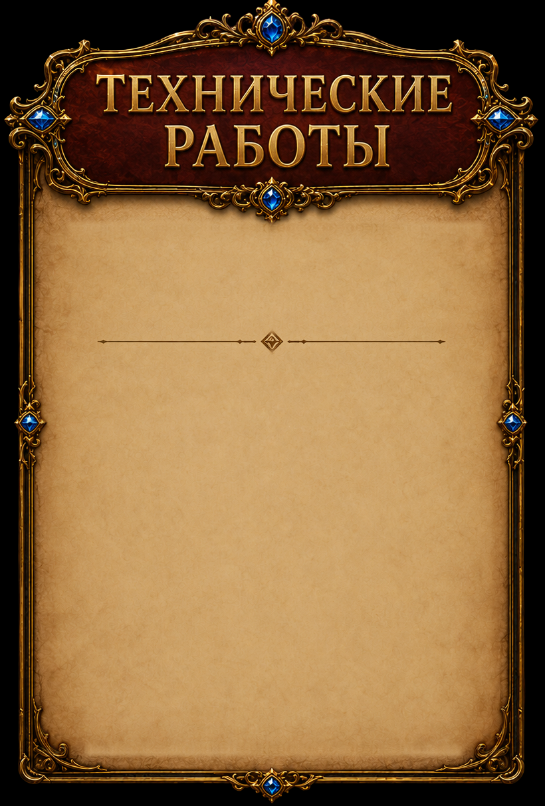

One imagegen-assisted parchment repair integrated only inside the original panel. Original frame, divider, title and alpha retained. Background previews below reveal the unchanged extracted outline.
